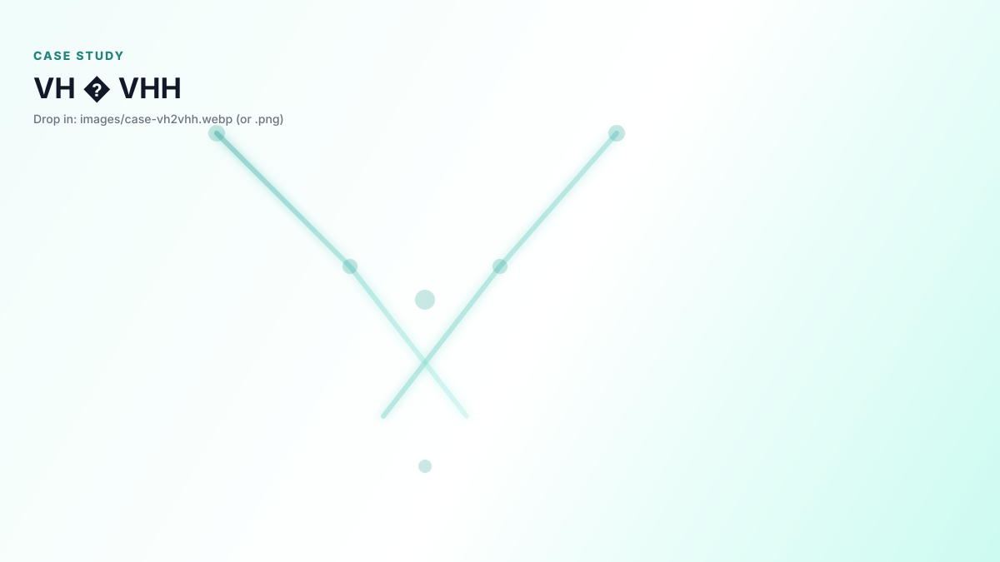

AI-Powered Drug Design
Clinical data meets machine learning. From antibody assessment to CAR-T engineering — accelerating biotherapeutic innovation.
AI
1,133 Clinical Sequences
Clinical data meets machine learning. From antibody assessment to CAR-T engineering — accelerating biotherapeutic innovation.
Therasik is a New York-based AI drug R&D startup rooted in Columbia University, with expertise spanning computational biology, structural bioinformatics, and machine learning for therapeutic design. We started by asking what we can actually learn from drugs that have already succeeded in the clinic — and built our platform around the answer.
On the antibody side, we assembled an analysis dataset covering 1,133 clinical sequences and structures — mAbs, VHH, and bispecifics — and applied machine learning to identify the sequence features, structural patterns, and developability characteristics that correlate with real clinical performance. On the cell therapy side, we curated 180 CAR-T design elements annotated with binder format, target antigen, and disease indication, then analyzed them computationally to extract design rules that hold across different targets and clinical settings.
These datasets aren't just references — they directly shape how we design experiments. Every antibody and CAR-T project we take on is informed by quantitative patterns drawn from clinical-stage data, which lets us move faster and make better-reasoned choices at the bench.
Long-term vision: Harness established therapeutics for AI-driven innovation and design, as well as de novo drug design.
In silico assessment, design, and development for biotherapeutics.
Sequence analysis, developability, immunogenicity, structure, humanization, affinity maturation.
Learn more →End-to-End Service: AI-driven CAR structure design to CRO validation.
Inquire Now →Format screening, sequence design, structural assessment, and developability check.
Learn more →Showcasing select collaborations across biotherapeutic design and evaluation. Visuals are anonymized.

Using AbEngineCore V4.5, we performed high-precision humanization of the classic murine 4D5, ensuring clinical-stage framework compatibility.

Comprehensive developability evaluation of murine 4D5 framework variants, analyzing SAP, instability, and CMC parameters.

Convert conventional VH into stable VHH-like binders without llama immunization.

Protein–protein interface design to tune checkpoint binding, guided by structure and stability constraints.

Format selection and structure‑guided engineering to balance geometry, stability, and dual‑target engagement.

Rational CAR architecture design (binder, spacer, transmembrane, co‑stims) with safety and manufacturability in mind.
Transparent, risk-sharing process.
Common questions about our services, data practices, and process.
Therasik is an AI drug R&D company that applies machine learning to clinical-stage therapeutic data — 1,133 antibody sequences and structures, 180 CAR-T design elements, and 125+ bispecifics. We use these datasets to deliver data-driven design recommendations across antibody developability, VHH humanization, bispecific engineering, and CAR-T architecture — and connect projects to experimental validation through CRO partnerships.
All projects are covered by an NDA before any data is shared. Sequences and project data are transmitted through encrypted channels, never disclosed to third parties, and not retained after the project is complete. Your IP is protected from day one.
We accept FASTA, GenBank, and IMGT/Kabat-formatted sequences. For structure-enabled analysis, we accept PDB files (experimental or homology models). We work with VH/VL pairs, VHH single domains, bispecific constructs (IgG-based and fragment formats), and CAR constructs. If your sequence is in a non-standard format, just email us and we'll sort it out.
We trained on what has already succeeded in the clinic, not on synthetic or in-silico generated data. Our antibody dataset covers sequences that have been through IND filing or clinical trials, allowing us to identify the sequence features, structural patterns, and physicochemical properties that correlate with clinical-stage performance — rather than just computational proxies.
Click "Go to Inquiry Form" in the Contact section, or email us directly at contact@therasik.com. We offer a free initial scoping call before any commitment — no sequence required upfront. We typically respond within 1–2 business days.
Yes. We are based in New York and work with clients globally. Most of our engagements are conducted fully remotely — sequence submission, consultation, and report delivery are all handled online. We are experienced with cross-time-zone collaboration and support both English and Chinese communication.
Technical consultation, drug evaluation, and CRO/Biotech collaboration.
Send us your sequences and project details for a tailored assessment.